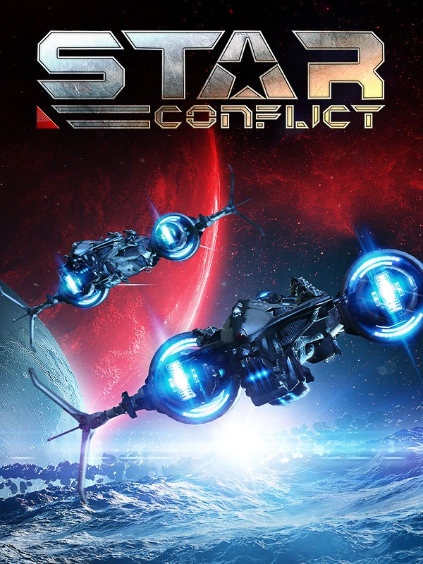

Star Conflict
Star Conflict
Details
|  | |
| Spielzeit | 8m 0s |
| Letzte Aktivität | 23.08.2016 21:15:29 |
| Hinzugefügt | 19.12.2019 |
| Modifiziert | 12.12.2022 1:23:43 |
| Fertigstellungsstatus | Gespielt |
| Bibliothek | Steam |
| Quelle | Steam |
| Plattform | PC (Windows) |
| Veröffentlichungsdatum | 27.02.2013 |
| Community Bewertungen | 50 |
| Kritiker Punkte | 75 |
| Benutzerwertung | |
| Genre | Action Simulation |
| Entwickler | Star Gem Inc. |
| Verleger | Gaijin Entertainment |
| Eigenschaft | Achievements Co-op Multiplayer Steam Karten |
| Links | Community Hub Discussions News Store Page PCGamingWiki Achievements |
| Tag | Achievements Co-Op VR Support |
Beschreibung
Just Updated

Pilots! UMC scientists record a decrease in the wave of abnormal energy. Halloween time is over this year.
Learn more on the official game site.
About the Game
Star Conflict is an action-packed, massively multiplayer space simulation game that puts players in the role of elite pilots engaging in a widespread interplanetary skirmish.The whole world for PVP and PVE!
- PVP battles on dozens of space locations
- PVE missions and quests for groups or lone wolves
- Unique sandbox mode with extensive PVP and PVE capabilities
- Corporations' battles for influence
- More than a hundred ships of various types and purposes
- 9 tactical roles, hundreds of modules and the possibility of modifying
- Production of modules and ships!
Key Features:
- A Fleet at Your Fingertips
Take command of varied battleships, from nimble scouting ships to heavy frigates loaded with guns and rockets. In due time, you can command your own fleet. - Survival in outer space
You can undock from the station and travel around space colonies invaded by an ancient alien race. You can complete quests, collect valuable items, craft modules and ships, meet other players to fight or team up to resist pirates and evil aliens from deep space. - Choose Your Path
Each ship can be used for strategic missions—investigate the area, hunt enemies from the shadows, or gain support from allies. Impressive arsenal of weapons and gadgets, as well as the opportunity to craft items and ships will help you with it. - If You’re Not With Us, You’re Against Us!
Form an alliance with friends to create a deadly squadron of elite pilots. Fight with other players, perform PVE missions. Create corporation and take part in the battles for control of the territories. Enter your name in the annals of Universe history. - Gain Experience and Skill
Develop your abilities, establish specialized skills, and perfect your tactics. You could rush into battle full-force, operate stealthily from a distance, or sneak around your enemies and strike a crushing blow from behind — the strategy is up to you!
Story
Three thousand years have passed since the first colonists left Earth. Now the galaxy is divided between the militant star empires and independent mercenary groups. In a remote corner of the galaxy — Sector 1337, the area of the dead — a world has been left behind. Here, the ruins of a great civilization of Aliens have recently been discovered. Huge factories and sprawling cities are falling into decay. Fragments of ships lie on the fields where massive battles were once fought. But there is not a living soul. Everything has been destroyed by a mysterious Cataclysm — a pulsing anomaly that burned out all life within this sector.This doesn’t stop mankind, the new «owner» of the Universe. Mercenaries and adventurers have flocked to the sector to sift through the ruins and loot its abandoned artifacts, without consideration of the danger. Many have disappeared — including members of well-armed expeditions — but those who have managed to return have uncovered unprecedented riches. So looters continue to come here, to find the Aliens’ lost treasures — and to fight for them.